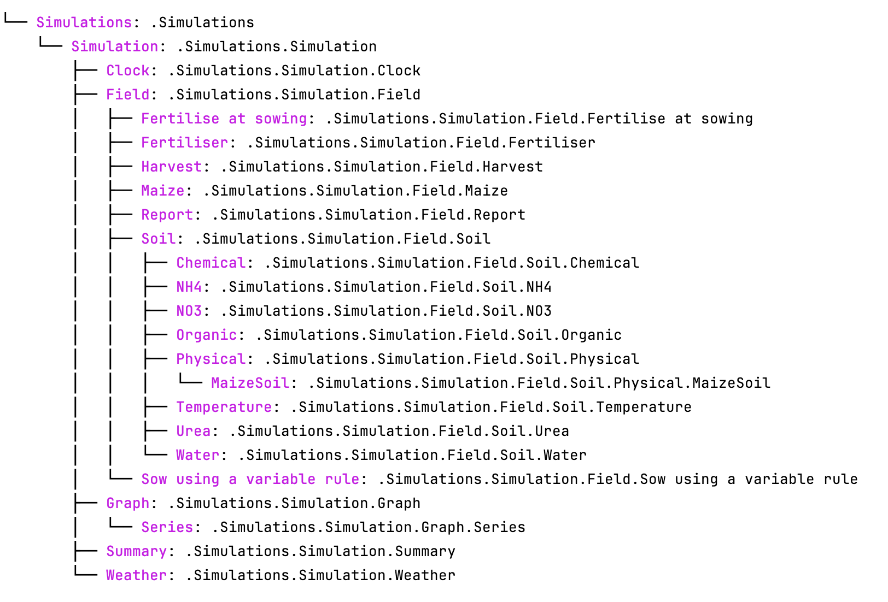

Inspect Model
Most of the time, when modifying model parameters and values, you need the full path to the specified APSIM model.
This is where the inspect_model method becomes useful—it allows you to inspect the model without opening the file in the APSIM GUI.
Hint
Models can be inspected either by importing the Models namespace or by using string paths. The most reliable approach is to provide the full model path—either as a string or as a Models attribute path.
However, remembering full paths can be tedious, so allowing partial model names or references can significantly save time during development and exploration.
Let’s take a look at how it works.
from apsimNGpy.core import base_data
from apsimNGpy.core.core import Models
from apsimNGpy.core.apsim import ApsimModel
load default maize module:
model = ApsimModel(model= 'Maize')
Find the path to all the manager script in the simulation:
model.inspect_model(Models.Manager, fullpath=True)
[.Simulations.Simulation.Field.Sow using a variable rule', '.Simulations.Simulation.Field.Fertilise at
sowing', '.Simulations.Simulation.Field.Harvest']
Inspect the full path of the Clock Model:
model.inspect_model(Models.Clock) # gets the path to the Clock models
['.Simulations.Simulation.Clock']
Inspect the full path to the crop plants in the simulation:
model.inspect_model(Models.Core.IPlant) # gets the path to the crop model
['.Simulations.Simulation.Field.Maize']
Or use full string path as follows:
model.inspect_model(Models.Core.IPlant, fullpath=False) # gets you the name of the crop Models
['Maize']
Get full path to the fertiliser model:
model.inspect_model(Models.Fertiliser, fullpath=True)
['.Simulations.Simulation.Field.Fertiliser']
Hint
The models from APSIM Models namespace are abstracted to use strings. All you need is to specify the name or the full path to the model enclosed in a stirng as follows:
model.inspect_model('Clock') # get the path to the clock model
['.Simulations.Simulation.Clock']
Alternatively, you can do the following:
model.inspect_model('Models.Clock')
['.Simulations.Simulation.Clock']
Repeat inspection of the plant model while using a string:
model.inspect_model('IPlant')
['.Simulations.Simulation.Field.Maize']
Inspect using full model namespace path:
model.inspect_model('Models.Core.IPlant')
What about weather model?:
model.inspect_model('Weather') # inspects the weather module
['.Simulations.Simulation.Weather']
Alternative:
# or inspect using full model namespace path
model.inspect_model('Models.Climate.Weather')
['.Simulations.Simulation.Weather']
Try finding path to the cultivar model:
model.inspect_model('Cultivar', fullpath=False) # list all available cultivar names
['Hycorn_53', 'Pioneer_33M54', 'Pioneer_38H20', 'Pioneer_34K77', 'Pioneer_39V43', 'Atrium', 'Laila', 'GH_5019WX']
# we can get only the names of the cultivar models using the full string path:
model.inspect_model('Models.PMF.Cultivar', fullpath = False)
['Hycorn_53', 'Pioneer_33M54', 'Pioneer_38H20', 'Pioneer_34K77', 'Pioneer_39V43', 'Atrium', 'Laila', 'GH_5019WX']
Hint
model_type can be any of the following classes from the Models namespace, and can be passed as strings or as full path to Models namespace if Models is imported
'Models.Manager'or"Manager"– Returns information about the manager scripts in simulations.Models.Core.Simulationor"Simulation"– Returns information about the simulation.Models.Climate.Weatheror'Weather'– Returns a list of paths or names pertaining to weather models.Models.Core.IPlant– or'IPlant'Returns a list of paths or names for all crop models available in the simulation.'Models.Report'or"Report"returns the available report paths or names"Models.Surface.SurfaceOrganicMatter"or'SurfaceOrganicMatter'returns path to the surface organic module'Models.PMF.Cultivar' or ``'Cultivar'paths or names to all cultivars' Models.Clock'or'Clock'returns all path to the clock models availableModels.Soils.Physical | Models.Soils.Chemical | Models.Soils.Organic | Models.Soils.Water | Models.Soils.Soluteor'Physical' | 'Chemical' | 'Organic' | 'Water' | 'Solute'path to soil models.(``Additional`` model types may be available based on APSIM simulation requirements.)
Tip
In some cases, determining the model type can be challenging. Fortunately, apsimNGpy provides a recursive function to simplify this process—the find_model method. This method helps identify the model type efficiently. However, you need to know the name of the model, such as Clock or Weather, to use it effectively.
from apsimNGpy import core
from apsimNGpy.core.core import Models
from apsimNGpy.core.apsim import ApsimModel
# Load the default maize simulation
model = ApsimModel(model= 'Maize')
# Inspect or find specific components
model.find_model("Weather")
Models.Climate.Weather
model.find_model("Clock")
Models.Clock
Whole Model inspection
Use inspect_file method to inspects all simulations in the file. This method displays a tree showing how each model is connected with each other
model.inspect_file()
{kind=link}

Tip
To include cultivar paths to the above simulation tree, use cultivar =True as shown below.
model.inspect_file(cultivar = True)
Warning
Only a few key model types are inspected using model.inspect_model under the hood. Inspecting the entire simulation file can produce a large volume of data, much of which may not be relevant or necessary in most use cases.
If certain models do not appear in the inspection output, this is intentional — the tool selectively inspects components to keep results concise and focused.
For a complete view of the entire model structure, we recommend opening the simulation file in the APSIM GUI.
See also
API Reference